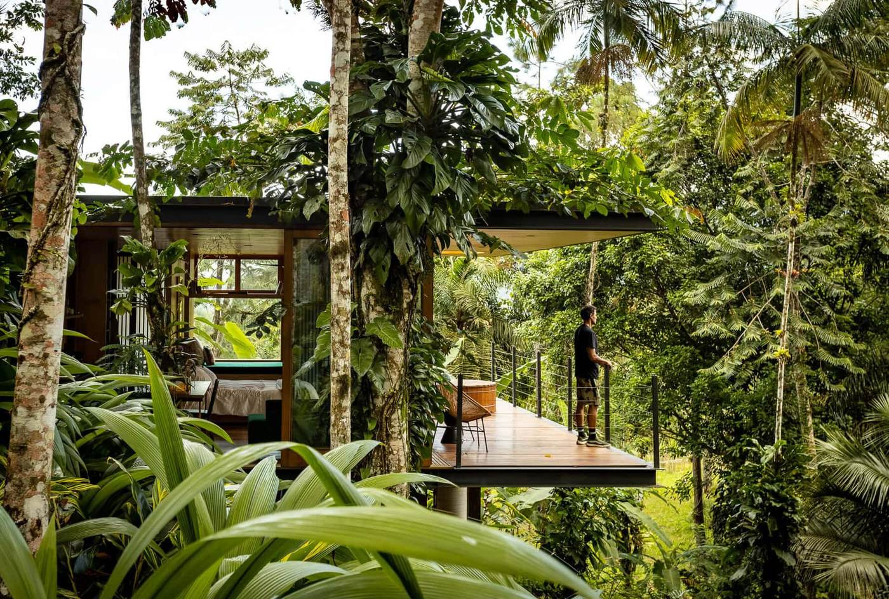
A experiência
Uma reserva de Mata Atlântica.
Uma fazenda. Duas cabanas.
E mais nada por perto.
Privacidade de verdade — a cabana mais próxima está a uma trilha de distância, não a uma parede.
Natureza que não é paisagem de fundo: é reserva, é mata em pé, é o que se vê da cama.
Silêncio. O tipo que só existe longe de estrada.
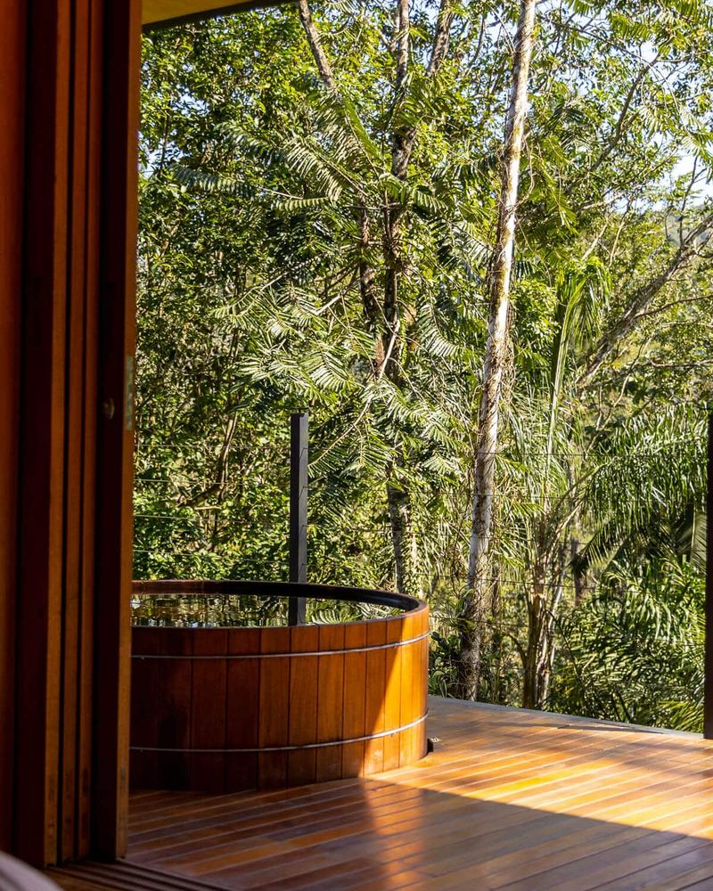
As cabanas
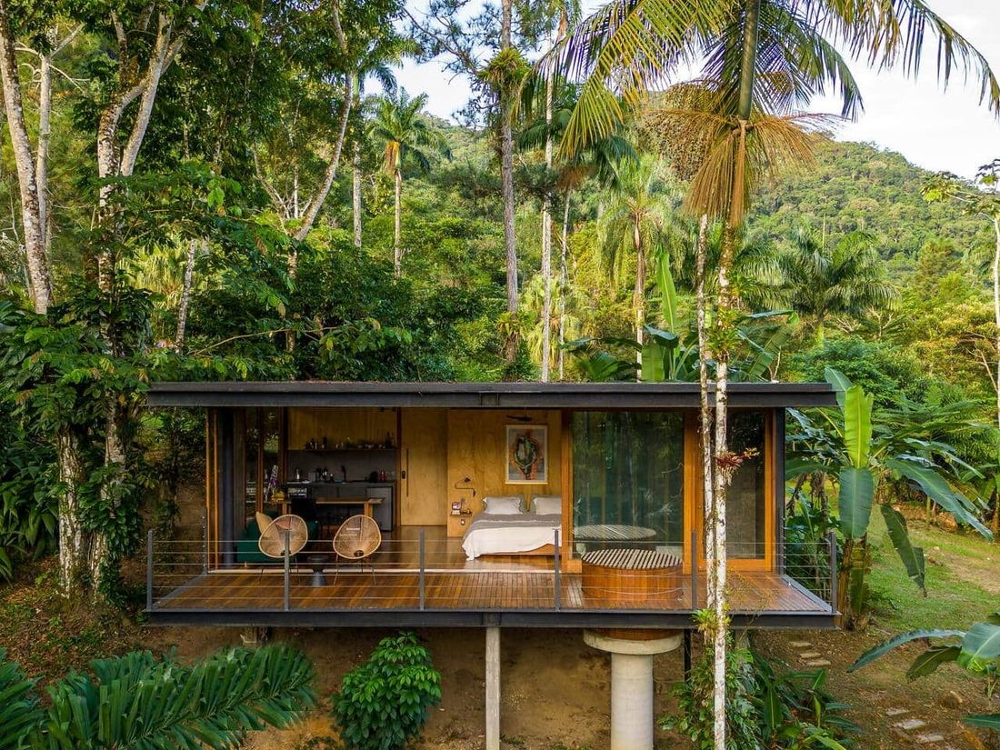
jaguatirica jungle cabin
jaguatirica
Um casulo de design entre a mata — móveis e moldura de espelho feitos sob medida para ela.
Banheira com vista para a Mata Atlântica. Café da manhã incluso, todos os dias.
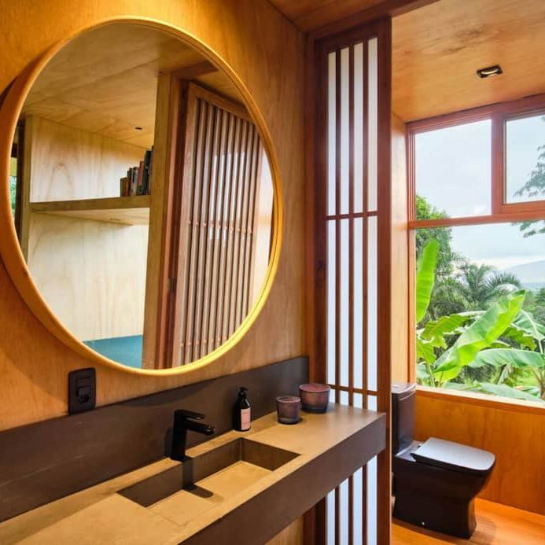
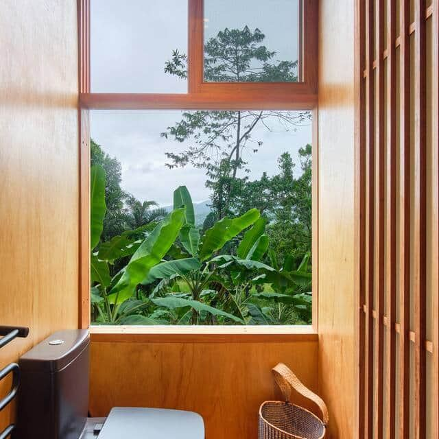
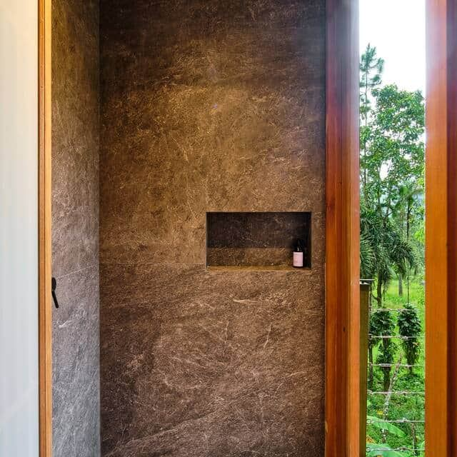
Duas cabanas. A mesma experiência.
Desde R$ 850/noite.
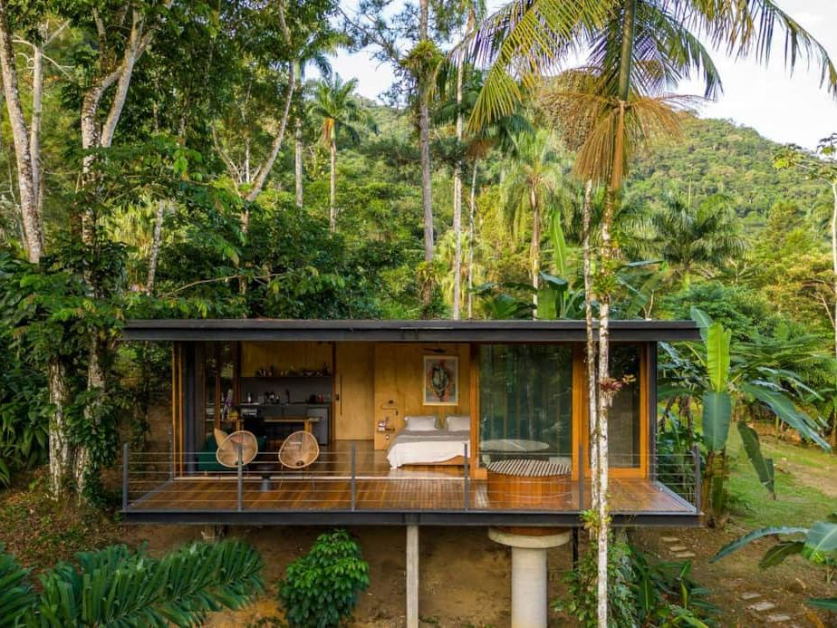
cabana suçuarana
suçuarana
A cabana mais nova da fazenda — arquitetura pensada para dissolver a linha entre dentro e fora.
Acessível a cadeiras de rodas. Café da manhã incluso, limpeza diária.
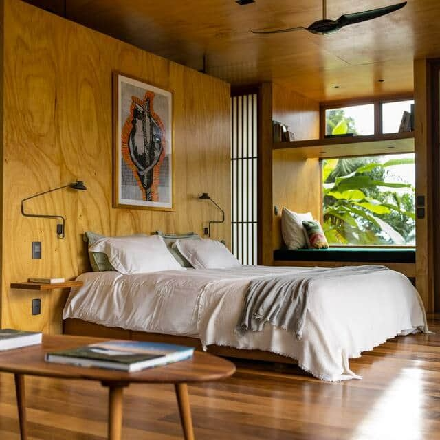
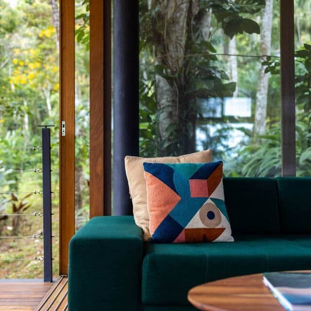
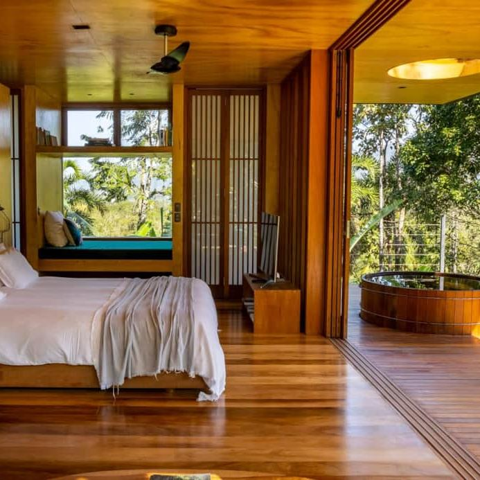
A arquitetura
Projetadas para desaparecer na copa das árvores.
Projeto assinado por Pitta Arquitetura — estrutura de aço, vidro e madeira, suspensa entre os troncos.
Nenhuma árvore derrubada para erguer as cabanas. A mata segue no lugar dela; a arquitetura se ajusta a ela.
Fotografia de arquitetura por jpimage_arq — o mesmo olhar que registra o projeto registra a estadia.
projeto @pittaarquitetura · fotografia @jpimage_arq
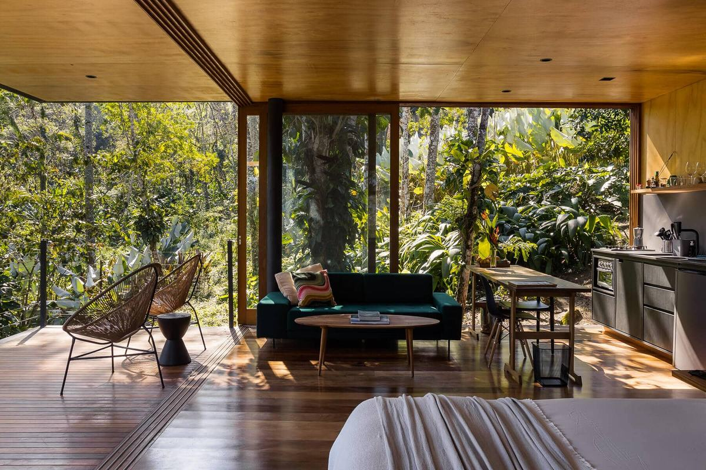
A fazenda
Mais do que as cabanas — a fazenda inteira ao redor.
a sede e a piscina
A sede histórica, com piscina, fica reservada à parte — hóspedes das cabanas têm acesso às trilhas, à cachoeira e às piscinas naturais.
o barco
A fazenda tem um barco próprio para sair pela costa de Ubatuba.
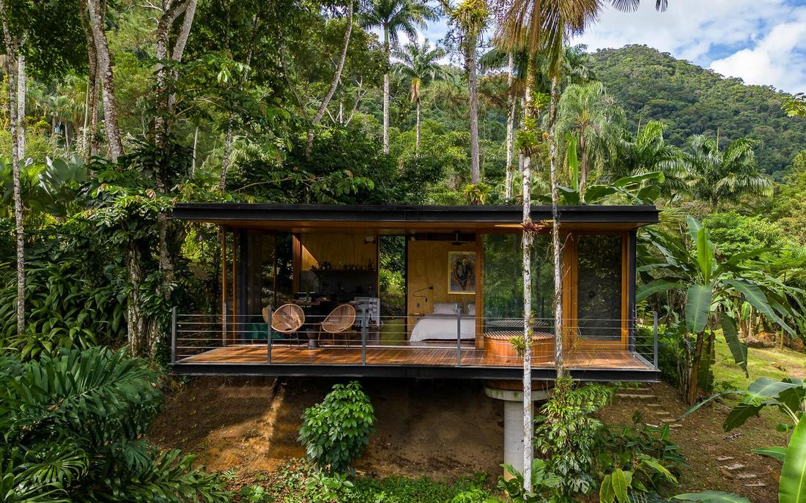
os rios
Cachoeira a dez minutos a pé da cabana, com piscinas naturais mais acima. Trilhas sinalizadas o ano todo.
Quem já esteve aqui
250+ avaliações 5 estrelas desde 2022
"Sem dúvida, um dos lugares mais incríveis em que já fiquei na vida. A natureza ao redor é maravilhosa, e a arquitetura e beleza do espaço são de tirar o fôlego."
— Maria, Vancouver, Canadá
Já na imprensa
Reserva
Alguns dias aqui.
resposta rápida, sem taxa de plataforma